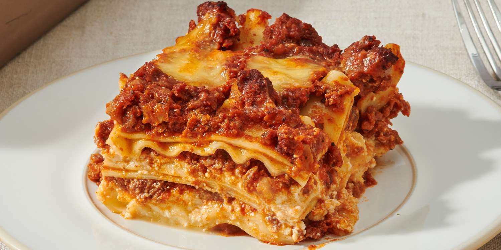

Lasagna

Description
This is a delicious lasagna recipe that everyone will love!
Lasagna is a classic Italian dish made with layers of pasta, meat sauce, and cheese.
Ingredients
- 12 lasagna noodles
- 1 lb ground beef
- 2 cups ricotta cheese
- 2 cups mozzarella cheese
- 1 cup parmesan cheese
Steps
- Preheat the oven to 375°F (190°C).
- Cook the lasagna noodles according to the package instructions.
- Heat the ground beef in a large skillet until browned.
- Add the meat sauce and simmer for 10 minutes.
- Layer the noodles, meat sauce, and cheeses in a baking dish.
- Bake for 30 minutes or until golden brown.
Back to Home